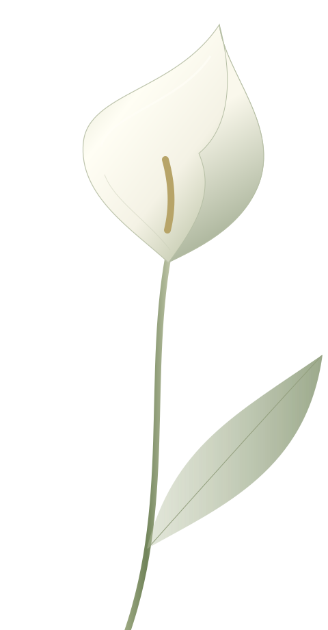
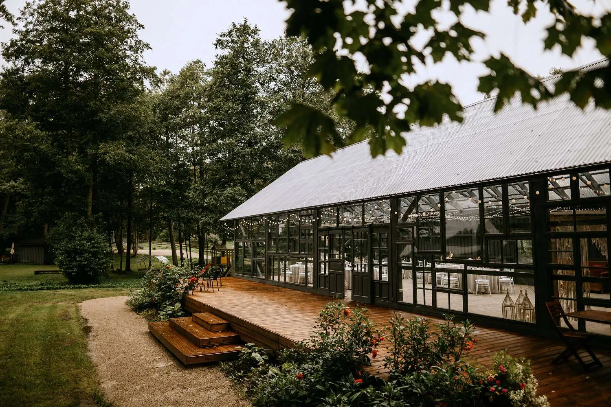

15:00
Встреча
Первые объятия
и приветственные бокалы
нажмите на печать, чтобы открыть приглашение
Мы женимся!
ПРИГЛАШЕНИЕ НА НАШУ СВАДЬБУ
Мы выбираем друг друга.
И хотим разделить этот день с вами.

САМОЕ ВАЖНОЕ — БЫТЬ РЯДОМ
Есть дни, которые становятся частью нашей истории.
Мы будем счастливы, если в этот день вы будете рядом —
обнимать, улыбаться и танцевать вместе с нами.
Приглашаем вас на нашу свадьбу.
СОХРАНИТЕ ДАТУ
суббота · DUNDURIŅI · ЛАТВИЯ
ДО НАШЕЙ СВАДЬБЫ ОСТАЛОСЬ

МЕСТО ВСТРЕЧИ
Парк, озеро Сасмакас и светлый зал со стеклянными стенами. Место для долгих разговоров и счастливых воспоминаний.
Ārlavas pagasts, Talsu novads, Латвия — на берегу озера Сасмакас, в старом парке у трассы Талсы–Роя. От трассы до площадки — 1,5 км по земляной дороге.
Рига — 135 кмЮрмала — 97 кмВильнюс — 400 кмМажейкяй — 130 кмЛондон — ✈ 1700 км
Найти в Google Maps ↗Найти в Waze ↗НАШ ДЕНЬ
Время пока предварительное — окончательное расписание пришлём ближе к дате. Церемония — на природе, у озера: в случае дождя всё легко переносим в стеклянный зал.
Первые объятия
и приветственные бокалы
Самые важные слова
в окружении близких
Тёплые пожелания
и время вместе
Музыка, улыбки
и ещё один танец
ДРЕСС-КОД
Нам будет приятно, если вы поддержите палитру праздника — молочный, песочный, пыльная роза, терракота, коричневый, шалфейный и хаки. Зелёный совсем не обязателен — выбирайте тот цвет, в котором вам красиво и комфортно.
Церемония на природе: выбирайте удобную обувь и возьмите тёплый слой на вечер.
ПОСЛЕ ПРАЗДНИКА
Остаться после свадьбы могут все — ночёвка будет на территории Dunduriņi. Отметьте это в анкете, и мы всё организуем.
А на следующий день — купаться в озере, загорать и никуда не спешить: тут есть лодки, SUP-доски, катамаран, сауна и кубль у воды. Не забудьте купальники и полотенца!
ПОЖЕЛАНИЯ
Ваше присутствие — самый большой подарок для нас.
Если хотите порадовать нас ещё больше, мы будем благодарны
за вклад в наше общее будущее.
А вместо цветов можно подарить нам лотерейный билет —
вдруг именно ваш билет окажется счастливым.
ВОПРОС — ОТВЕТ
26 июня 2027 года — Dunduriņi под Талси, Латвия. Сбор гостей в 15:00; полное расписание — в разделе «Наш день».
Из Риги — около 1,5 часов на машине, последние 1,5 км — грунтовая дорога. Точный адрес, карты и подсказки — в разделе «Место».
Конечно — если вам хочется, чтобы они были рядом в этот день. Отметьте детей в анкете, и мы всё учтём.
Остаться после свадьбы могут все — ночёвка на территории Dunduriņi. Отметьте это в анкете, и мы всё организуем.
Самое ценное — ваше присутствие. Если хотите порадовать нас ещё больше — вклад в наше общее будущее или лотерейный билет (подробнее в разделе «Пожелания»).
Нам приятно, если вы поддержите палитру праздника — молочный, песочный, пыльная роза, терракота, коричневый, шалфейный и хаки. Главное — чтобы вам было красиво и комфортно, а церемония на природе — так что удобная обувь пригодится.
ЖДЁМ ВАШЕГО ОТВЕТА
Несколько деталей помогут нам
позаботиться о каждом.
Ответьте, пожалуйста, до — это поможет нам всё организовать.